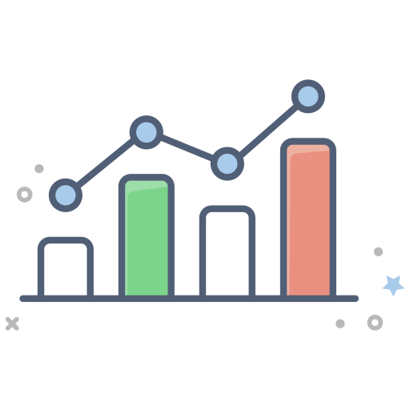
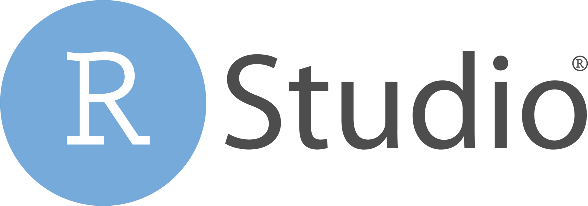
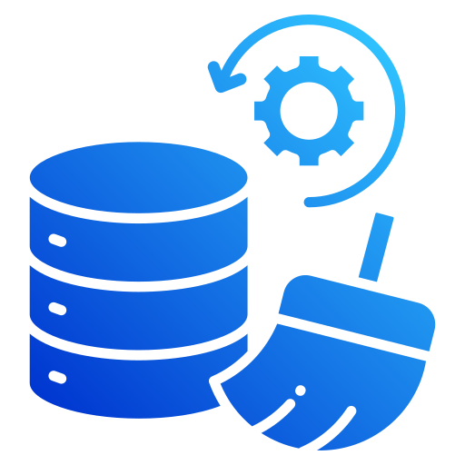
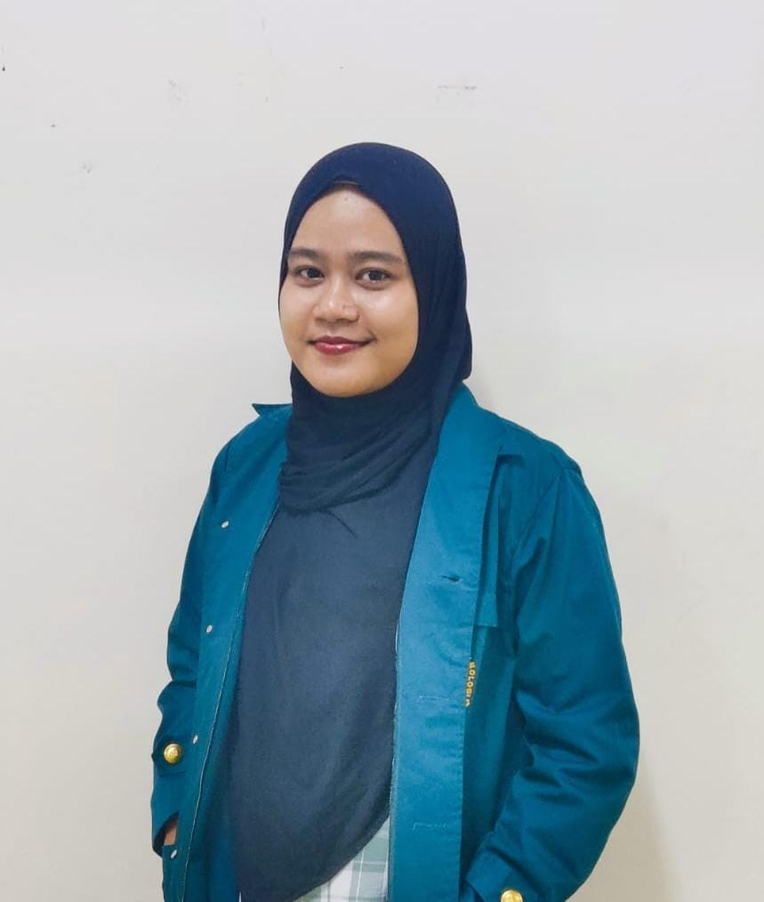
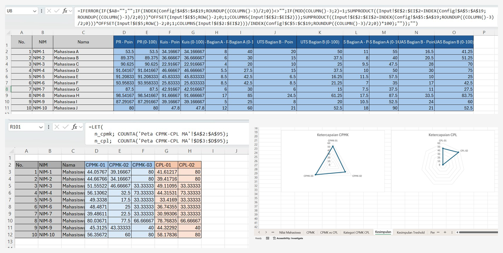
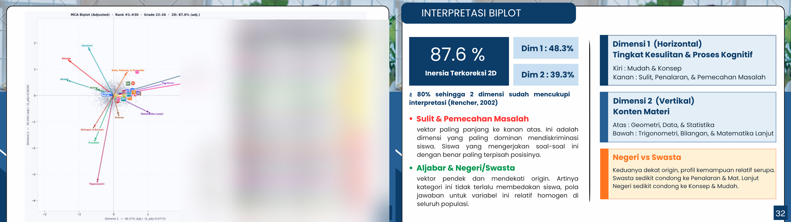

02
Skills & tools
Excel / Google Sheets

Python

Looker Studio

Statistics
Financial Analysis

R Programming
Data Visualization

Data Cleaning

Mathematics graduate from Institut Teknologi Bandung, experienced in data analysis, dashboard development, and financial reporting. Passionate about transforming complex data into actionable insights through visualization and automation.
Final-year Mathematics student at Institut Teknologi Bandung (ITB),
specializing in data analytics, business intelligence, and statistical modeling.
Experienced in building end-to-end dashboards, validating statistical datasets,
developing web scraping pipelines, and creating data visualizations
while working hands-on with Python, R, Looker Studio, and Excel
across internships at Bank Mega Jakarta and BPS Kota Bandung.
Beyond technical work, I have led financial operations as General Treasurer,
managing budgets and ensuring financial accountability across large-scale organizations.





.jpg)
.jpg)
I am currently open to full time opportunities in data analytics, finance, and management trainee programs. Feel free to reach out, I'd love to connect!
Send me an email